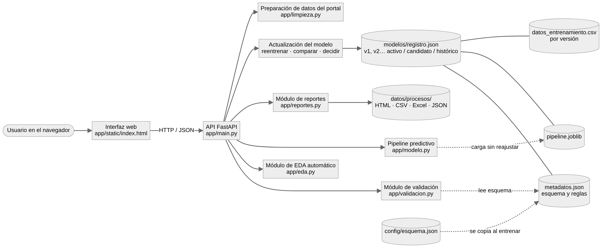

En las Zonas No Interconectadas la electricidad se genera en el sitio, casi siempre con diésel que llega por río o por aire. Este sistema analiza los datos de prestación del servicio, verifica que sean confiables y predice la energía activa del mes siguiente para planear combustible y logística.
Análisis exploratorio automático de cualquier CSV o Excel, aunque no sirva para el modelo. El sistema decide qué estadísticas y gráficos mostrar según el tipo de cada variable.
Antes de predecir, el archivo pasa por cuatro niveles de validación. Si es incompatible no se genera ninguna predicción: el sistema explica el problema, usted corrige el archivo y lo vuelve a cargar.
Convierte el CSV original «Estado de la prestación del servicio de energía en Zonas No Interconectadas» en la tabla del modelo, aplicando la limpieza documentada en el análisis (formato numérico, nombres por código DANE, códigos de localidad corregidos).
Qué modelo está activo, cómo se validó, qué variables usa y cómo actualizarlo con datos nuevos sin perder la versión anterior.
Cargue registros que ya tengan la energía real (energia_objetivo_kwh). Se validan, se integran, se reentrena y aparece una versión candidata. La activa no se reemplaza hasta que usted registre una decisión justificada.
Cada archivo que se carga queda registrado con sus reportes descargables: análisis exploratorio, compatibilidad, predicciones y actualización del modelo.
Archivos preparados para demostrar cada escenario obligatorio. «Probar» los carga directamente en la sección que corresponde; «Descargar» los guarda para revisarlos o modificarlos.
Actividad integradora del curso de Sistemas Inteligentes, Fundación Universitaria Uniclaretiana.
Docente: Carlos Stiwar Asprilla Mosquera
Base abierta «Estado de la prestación del servicio de energía en Zonas No Interconectadas», enero de 2020 a enero de 2026. Una fila por localidad y mes, con energía activa y reactiva, potencia máxima, fecha de demanda máxima y horas de servicio.
La interfaz consume la API; la API coordina validación, EDA, pipeline, reportes y versiones. Las reglas de validación viven en archivos de metadatos, no en la interfaz.
